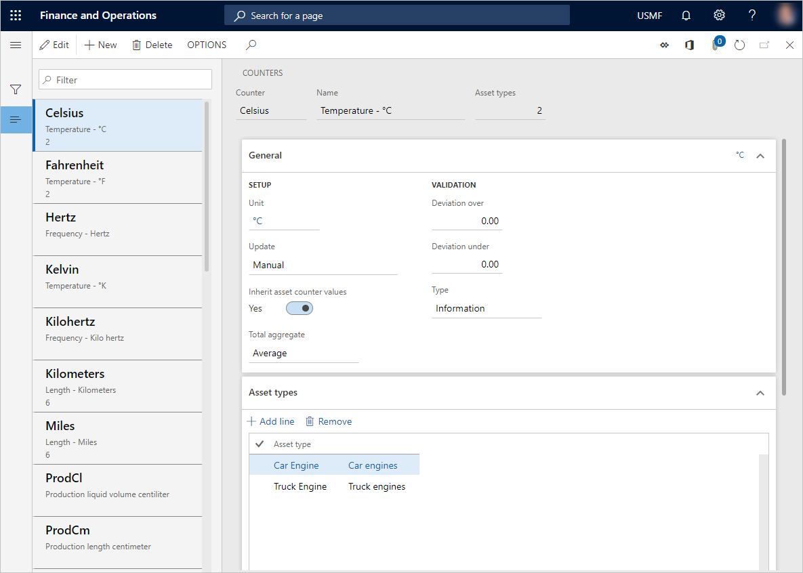

Zähler
Important
Dynamics 365 for Finance and Operations hat sich zu speziell entwickelten Anwendungen entwickelt, mit denen Sie bestimmte Geschäftsfunktionen verwalten können. Weitere Informationen zu diesen Änderungen finden Sie im Dynamics 365-Lizenzierungshandbuch.
In diesem Thema wird erläutert, wie Sie Zählertypen in Anlagenmanagement erstellen. Zählertypen werden verwendet, um Zählererfassungen für Anlagen vorzunehmen, z. B. hinsichtlich der Anzahl der Produktionsstunden oder der an der Anlage produzierten Menge. Anlagentypen sind mit Zählertypen verknüpft. Dies bedeutet, dass ein Zähler für eine Anlage nur verwendet werden kann, wenn der Zähler für den Anlagentyp eingerichtet ist, der in der Anlage verwendet wird.
Bevor Sie Zählererfassungen für Anlagen vornehmen können, müssen Sie zunächst im Feld Zähler die Zählertypen erstellen, die Sie verwenden möchten. Danach können Sie Zählererfassungen für Anlagen unter Zähler erstellen.
Zähler können auf Wartungsplänen verwendet werden. Eine Wartungsplanposition kann vom Typ „Zähler“ sein, beispielsweise in Bezug auf die Anzahl der Produktionsstunden oder die produzierte Menge.
Eine Zählererfassung kann auf der Grundlage der Produktionsstunden oder produzierten Menge manuell oder automatisch aktualisiert werden. Ein Zähler kann so eingerichtet werden, dass eine von drei Aktualisierungsmethoden verwendet wird (ausgewählt im Feld Aktualisieren unter Zähler):
- Manuell: Sie müssen Zählerwerte manuell erfassen.
- Produktionsstunden: Der Zähler wird automatisch basierend auf der Anzahl der Produktionsstunden aktualisiert.
- Produktionsmenge: Der Zähler wird automatisch basierend auf der produzierten Menge aktualisiert.
Note
Wenn die produzierte Menge verwendet wird, sind alle erfassten Artikel in der Zählererfassung enthalten, sowohl die Gutmenge als auch die Fehlermenge. Es ist immer möglich, bei Bedarf eine manuelle Zählererfassung vorzunehmen.
Zählertypen für Anlagenzählererfassungen erstellen
- Wählen Sie Anlagenverwaltung > Einstellungen > Anlagentypen > Zähler aus.
- Wählen Sie Neu aus, um einen neuen Zählertyp zu erstellen.
- Geben Sie eine Kennung im Feld Zähler und einen Zählernamen im Feld Name ein.
- Wählen Sie auf dem Inforegister Allgemein eine Zählereinheit im Feld Einheit aus.
- Wählen Sie im Feld Aktualisieren die für den Zähler zu verwendende Aktualisierungsmethode aus.
- Wählen Sie auf der Umschaltschaltfläche Zählerwerte erben die Option „Ja“ aus, wenn untergeordnete Anlagen in einer Anlagenstruktur automatisch die auf der Ebene der übergeordneten Anlage vorgenommenen Zählererfassungen erben sollen.
- Wählen Sie im Feld Gesamtsumme die Summierungsmethode aus, die für einen Zähler mit diesem Zählertyp verwendet werden soll. „Summe“ ist die Standardeinstellung. Diese wird verwendet, um kontinuierlich registrierte Werte zum Gesamtwert hinzuzufügen. „Mittelwert“ kann verwendet werden, wenn ein Zähler eingerichtet wird, um einen Schwellenwert zu überwachen, zum Beispiel bezüglich Temperatur, Erschütterungen oder Abnutzung einer Anlage.
- Geben Sie im Feld Abweichung über die obere Ebene in Prozent ein, um zu überprüfen, ob sich die manuellen Zählererfassungen innerhalb eines erwarteten Bereichs befinden. Die Überprüfung basiert auf einer linearen Erhöhung bei vorhandenen Zählererfassungen.
- Geben Sie im Feld Abweichung unter die untere Ebene in Prozent ein, um zu überprüfen, ob sich die manuellen Zählererfassungen innerhalb eines erwarteten Bereichs befinden. Die Überprüfung basiert auf einer linearen Verringerung bei vorhandenen Zählererfassungen.
- Wählen Sie im Feld Typ die Art der Meldung aus (Information, Warnung, Fehler), die bei manuellen Zählererfassungen angezeigt werden soll, wenn Abweichungen außerhalb des definierten Bereichs auftreten.
- Fügen Sie auf dem Inforegister Anlagentypen die Anlagentypen hinzu, die den Zähler verwenden können sollen.
- Fügen Sie auf dem Inforegister Zugehörige Anlagenzähler den Zähler hinzu, der automatisch aktualisiert werden soll, wenn dieser Zähler aktualisiert wird.
Note
Ein zugehöriger Zähler wird nur dann automatisch aktualisiert, wenn der zugehörige Zähler in den Zählereinstellungen über den Anlagentyp verfügt, dem er zugeordnet ist. Beispiel: Sie richten einen Zähler für „Produktionsstunden“ ein und fügen den Anlagentyp „Lkw-Motor“ hinzu. Wenn dieser Zähler aktualisiert wird, wird der zugehörige Zähler „Öl“ ebenfalls mit denselben Zählerwerten aktualisiert. Die Einstellung in Zähler schließt die Einstellung für „Stunden“ ein. Für den Zähler „Öl“ sollte außerdem der Anlagentyp „Lkw-Motor“ zum Inforegister Anlagentypen hinzugefügt werden, um den Bezug zum Zähler sicherzustellen. Unten auf den Screenshots sehen Sie ein Beispiel für die Einrichtung der Zähler für Stunden und Öl.
Wenn Anlagentypen zu einem Zählertyp unter Zähler hinzugefügt werden, wird dieser Zähler automatisch zu den Anlagentypen auf dem Inforegister Zähler unter Anlagentypen hinzugefügt.
